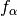
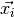
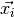
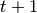

Supported models, grids and boundary conditions¶
The Sailfish solver currently supports the following Lattice-Boltzmann models and grids:
- single fluid
- two-dimensional: D2Q9 (BGK, MRT models)
- three-dimensional: D3Q13 (MRT), D3Q15, D3Q19 (BGK, MRT models)
- binary fluid
- two-dimensional: Shan-Chen (D2Q9), free-energy (D2Q9, BGK, MRT) [PRE78]
- three-dimensional: Shan-Chen, free-energy (D3Q19, BGK, MRT)
| [PRE78] | Contact line dynamics in binary lattice Boltzmann simulations, Phys. Rev. E 78, 056709 (2008). DOI: 10.1103/PhysRevE.78.056709 |
The single fluid models are implemented in both the incompressible and weakly compressible version, the latter of which is the default. To turn on the incompressible model, use the --incompressible command line switch.
An external force field (body force) can be enabled in all models.
A general overview of the Lattice-Boltzmann method¶
The Lattice-Boltzmann method is based on solving the following equation:
which is a discrete version of the Boltzmann equation known from non-equilibrium
statistical mechanics. Here,  are distributions of particles
moving in the direction  (the available directions are specified
by the chosen grid),
(the available directions are specified
by the chosen grid),  is the current time step,  is the
position of the
is the current time step,  is the
position of the  -th node in the grid, and is the collision
operator.
-th node in the grid, and is the collision
operator.
TODO: Add more info about the LBM.
Single relaxation time (BGK)¶
The BGK (Bhatnagar-Gross-Krook) approximation is based on the following form of the collision operator:
where  is the relaxation time and is the equilibrium
distribution, defined as a function of macroscopic variables at a node.
is the relaxation time and is the equilibrium
distribution, defined as a function of macroscopic variables at a node.
TODO: Add more info about the BGK approximation and its limitations.
Multiple relaxation times (MRT)¶
TODO: Add info about the MRT model.
Boundary conditions¶
Sailfish supports a number of local boundary conditions (non-local boundary conditions are currently not supported). Each of the implemented boundary condition types can be available for a specific kind(s) of boundary conditions (no-slip (wall), velocity, pressure) and dimensions.
Full-way bounce-back¶
This is the simplest type of boundary condition, available for no-slip and velocity nodes in all dimensions. The boundary condition imposed by the full-way bounce-back algorithm takes effect in the middle between the boundary node (which is a dry node, i.e. it does not represent any fluid volume and does not undergo collisions) and the neighboring fluid node. The algorithm does not require any knowledge about the normal vector of the wall, so it can work in arbitrarily complex geometries.
Full-way bounce-back works as follows:
- at time distributions are propagated from the fluid to the bounce-back node
- at time  the distributions at the bounce-back node are reflected across the node center, and then streamed in the standard way
This can be summarized as since it takes two time steps for the reflected distributions to reach back the fluid nodes.
Half-way bounce-back¶
The half-way bounce-back boundary rule is based on a similar idea as the full-way bounce-back. Here however, the reflection takes only one time step and takes place exactly in the middle between the fluid node and what would be the first node outside of the simulation domain: . The half-way bounce-back nodes are wet (i.e. true fluid nodes undergoing a standard collision process).
For non-stationary flows the half-way bounce-back rule is more accurate than the full-way bounce-back. For stationary flows there is no difference between them as the one step time lag in the full-way bounce-back rule does not impact the amount of momentum and mass transferred between the fluid and the boundary.
The wall normal vector is necessary for the half-way bounce-back rule to work as only the unknown distributions (those for which there is no data streaming from other nodes) at the boundary nodes are replaced.
Equilibrium¶
This boundary condition algorithm works by imposing the BGK equilibrium distributions for a node. It currently works for all types of boundary conditions in two dimensions only.
Zou-He¶
This algorithm is based upon the idea of the reflection of the off-equilibrium distributions. It currently works for all types of boundary conditions in two dimensions only.